Experience
'교육센터 운영 프로그램' DB 설계
-
프로젝트 개요 및 목적
- 고객의 요구사항에 맞게 DB 설계
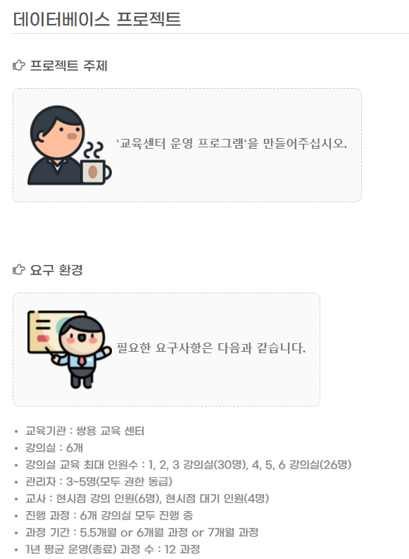▲ 요구사항 -
프로젝트 설명
- 구성원 : 4명
- 개발 언어 : ANSI-SQL, PL/SQL
- 개발 툴
- DB : Oracle 11g
- Tool : SQL-Developer, eXERD
-
개발 스킬
- ERD : eXERD 프로그램
- ANSI-SQL
- PL/SQL : Procedure, Trigger, Index, Function
-
담당 업무
-
요구 분석서 작성
요청 받은 요구사항을 기준으로 요구 분석서를 작성했습니다. 어떤 프로젝트도 마찬가지겠지만, DB설계 프로젝트 만큼은 요구사항을 정확히 분석하는게 제일 중요하다고 생각하며 진행하였습니다. 요구분석서가 차지하는 비중이 크고, 이를 기준으로 큰 구조가 완성된다고 생각하기 때문입니다. ▲ 요구분석서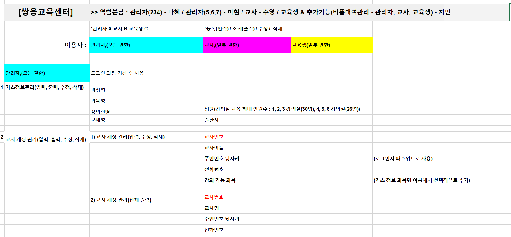▲ 업무분담 회의 자료
▲ 요구분석서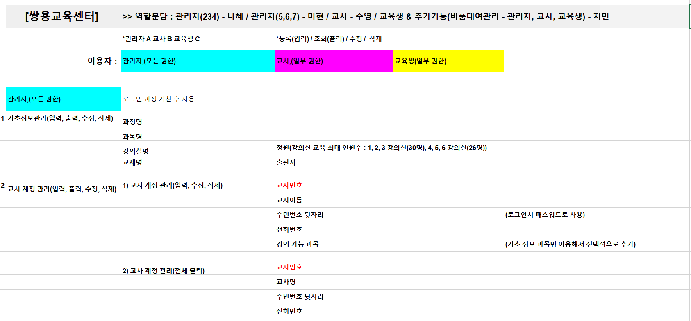▲ 업무분담 회의 자료 -
개발 환경 구성
DB프로젝트는 SQL을 통해 지속적으로 데이터를 CRUD 할 일이 많이 생기기 때문에 각자의 PC에서 개발을 진행하기에는 많은 불편함이 있을 것으로 판단되었습니다. 클라우드를 사용하거나, 서버PC를 통해 실시간으로 CRUD를 진행 해야했으나, 클라우드 사용보다는 서버PC를 사용하는 것이 편리해보였습니다. 허나 서버PC가 따로 없기 때문에 이를 대체할 PC가 필요했고, 제 데스크탑 PC를 서버PC 대체용으로 사용하기로 하였습니다. SQL-Developer에서 DCL을 통해 DB계정을 새로 만들었고, PC 공유기를 포트포워딩 하여 다른 조원들이 DB에 접속 할 수 있도록 환경을 구성하여 프로젝트를 진행하였습니다.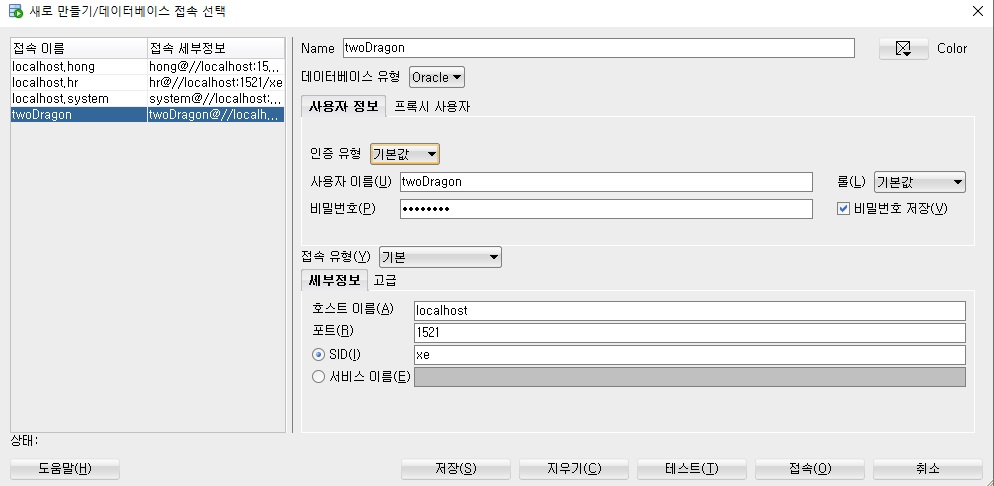▲ 본인 SQL-Developer 로그인 화면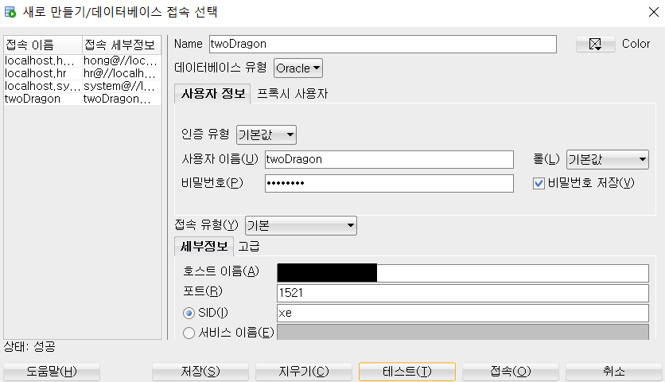▲ 조원 SQL-Developer 로그인 화면 -
DB 모델링
요구 분석서 및 DBMS를 정하고, 요구분석서를 토대로 ERD를 작성하였습니다. ERD는 eXERD 프로그램을 사용하여 진행하였으며 레코드와 컬럼을 구상하여 각각의 엔티티를 작성하였습니다. 그런 다음 엔티티들의 관계를 정의하여 모델링을 완료하였습니다.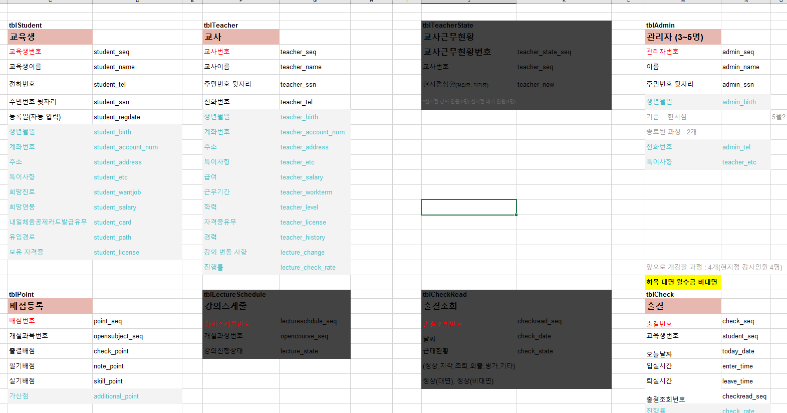▲ 엔티티 내용 정리 자료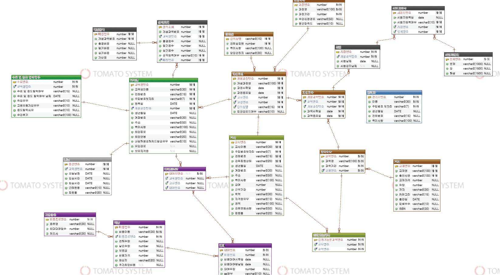▲ 논리 테이블 ERD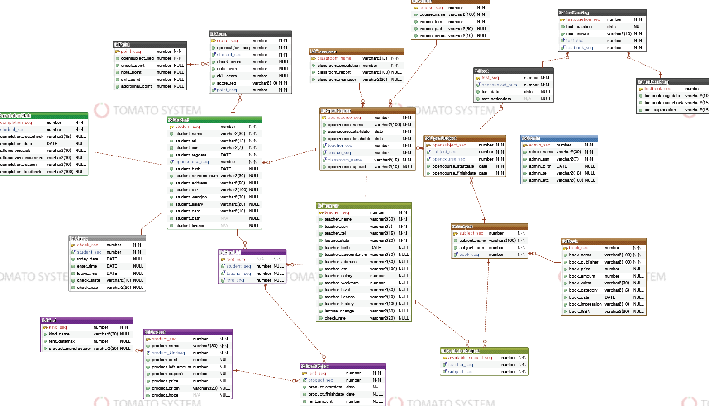▲ 물리 테이블 ERD -
DB 설계
ERD를 기준으로 설계를 진행했습니다. 식별자를 생성하고, 자료형을 선택하며 각각 엔티티간의 제약사항들을 걸어 필요한 엔티티를 모두 생성하였습니다. 추가로 삭제 할 경우를 대비하여 Drop은 부분을 파일을 따로 생성하였습니다.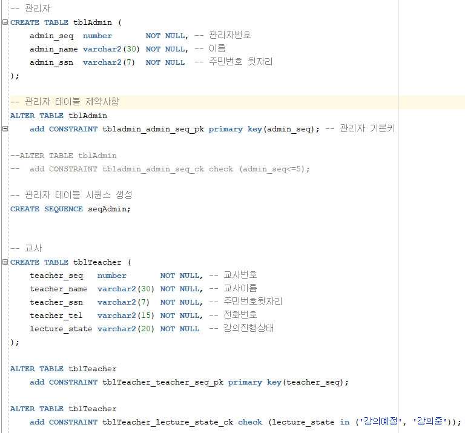▲ 엔티티 생성DDL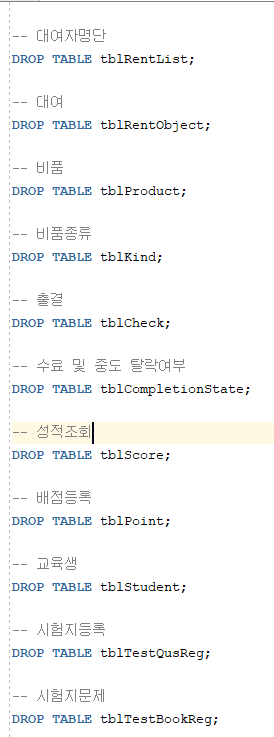▲ 엔티티 삭제DDL -
더미데이터 작성
설계된 DB에 맞는 데이터를 확보하기 위해 Eclipse에서 Java언어를 사용하여 주제에 맞는 필요한 교육생, 교사를 포함하여 다양한 종류의 임의의 데이터를 다량 확보하였습니다.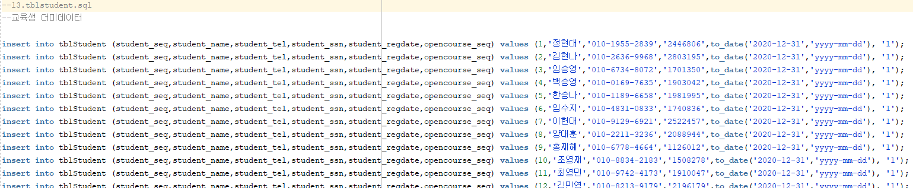▲ 더미데이터 -
DB 구축
설계된 엔티티와 작성한 ERD를 기준으로 필요한 SQL구문들을 작성하였습니다. 교육생과 비품대여 파트를 담당하였으며, ANSI-SQL을 사용하여 기본적인 데이터 조회를 할 수 있도록 구성하였고, 특정 업무 혹은 핵심 업무들은 주로 저장프로시저를 사용했습니다. 대부분은 Cursor를 사용하여 다량의 데이터를 읽을 수 있도록 구현였고, 특정 데이터 조회가 필요한 부분은 Select-Into 구문사용하였습니다. 추가로 Trigger를 사용하여 특정 행위를 할 경우 실행될 수 있도록 구현하였고, ANSI-SQL에서 자주 쓰일 것 같은 부분은 Function처리하여 편리성을 높였습니다.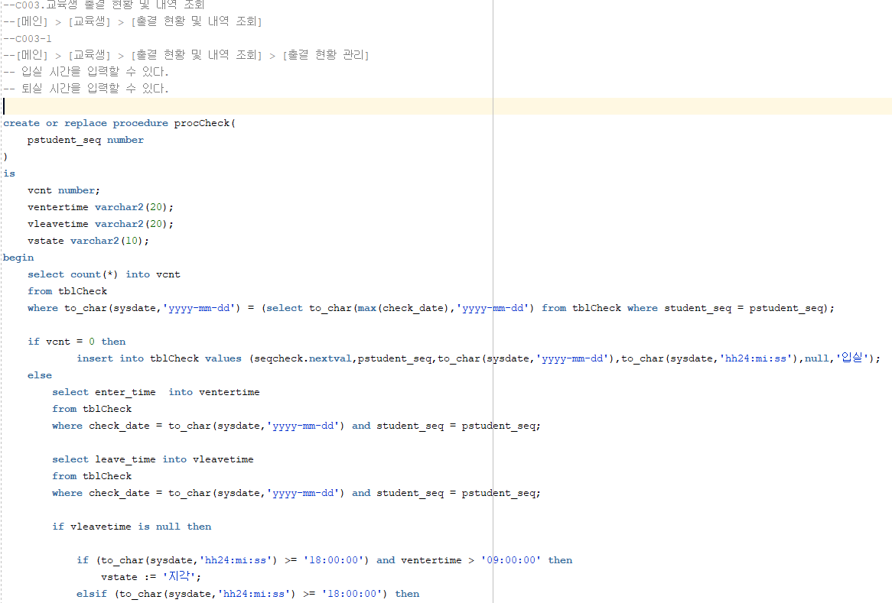▲ 작성한 PL/SQL
-
요구 분석서 작성
-
후기
-
DB 프로젝트는 SQL구문 작성 보다는 문서작성 부분에서 많은 어려움이 있었습니다. 요구분석서를 작성하면서 조원들 각자의 의견이 달라 조율이 필요했고, 요구사항을 분석할 때마다 내용이 바뀌게 되며, 특히 ERD 작성할 때는 요구분석서에서 작성한 내용과 오버랩되면서 어려움을 많이 느꼈었습니다. 저 뿐만아니라 조원들이 느끼는 감정 또한 동일했고, 이런 어려움 속에서 서로 업무를 미루면서 불평불만을 갖기 보다는 서로 멘탈관리를 해주면서 극복해 나갔습니다.
문서 작성 후에 회사에서의 경험을 살려 네트워크 환경을 구성하여 개인 PC DB에 모두 접속할 수 있도록 솔선수범하였고, 특별한 트러블 없이 완료할 수 있었습니다.
이번 프로젝트에서는 Java프로젝트의 아쉬움을 보완하기 위해 좀 더 노력했습니다. 익숙한 기술에 치우치기 보다는 작은 부분이라도 최대한 다양한 기술을 사용해보려고 노력했고, 완료에만 급급해 하기 보다는 완성도를 높일 수 있도록 노력했던 프로젝트 였습니다.
2021.05.24 ~ 2021.06.04
(1일 6시간. 총 72시간)
(1일 6시간. 총 72시간)